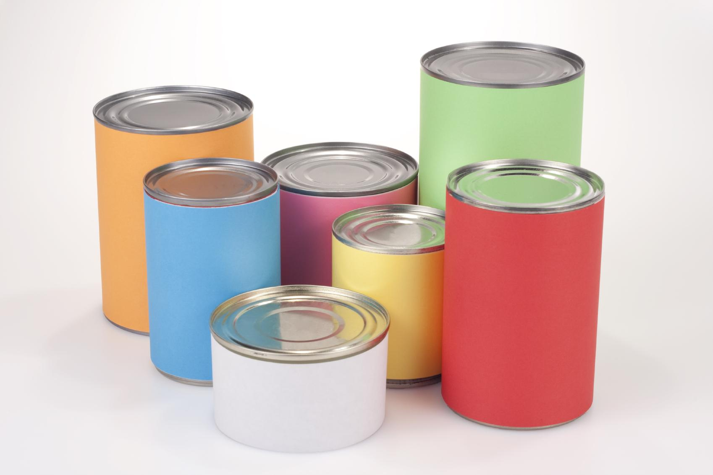
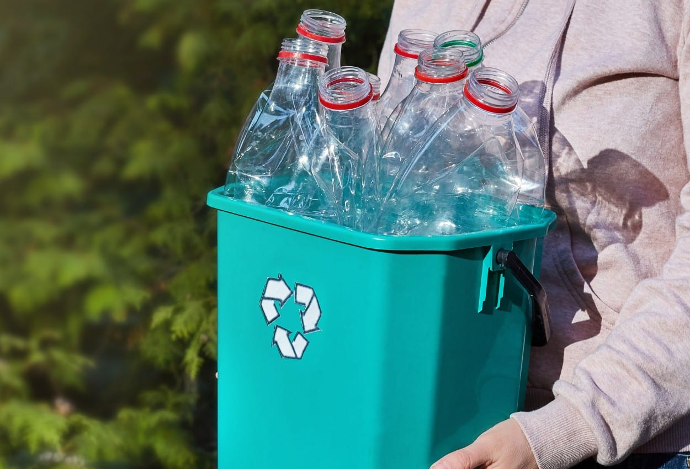
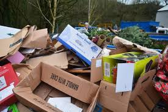
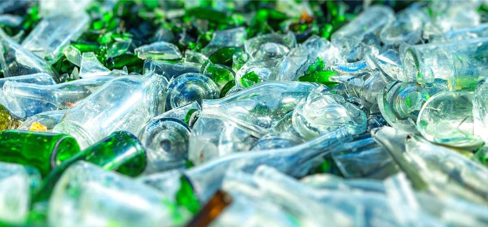
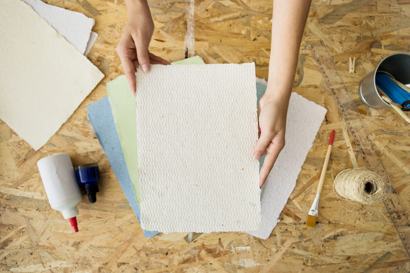
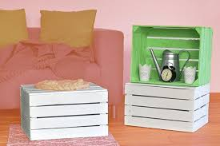
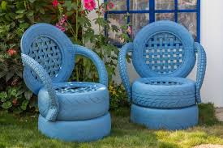
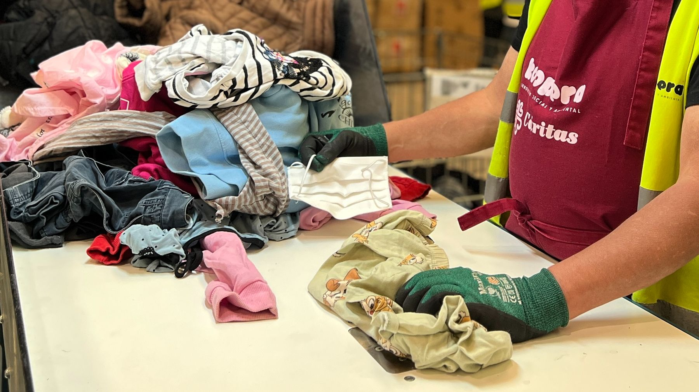

Menú de materiales reciclables e ideas para reciclar


Latas
Transforma latas en macetas, portalápices o lámparas decorativas.


Botellas de plástico
Conviértelas en maceteros, casas para pájaros o sistemas de riego.


Envases de cartón
Haz organizadores, juguetes o decoraciones ecológicas.


Envases de vidrio
Decora frascos o crea lámparas artesanales.


Periódico y papel
Usa papel reciclado para envolver regalos o hacer figuras de origami.


Muebles viejos
Renuévalos con pintura ecológica o conviértelos en nuevos objetos útiles.


Llantas
Usa llantas para hacer columpios o jardineras decorativas.


Ropa / Tela
Convierte prendas viejas en bolsas, tapetes o accesorios.